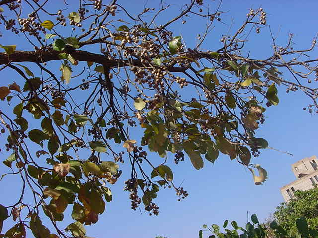
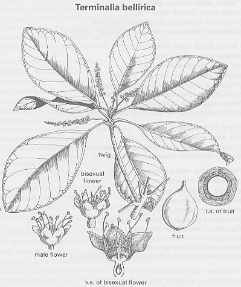

|
ECONOMICALLY
IMPORTANT PLANTS OF INDIA |
| Under-utilized Food and Fodder species and their wild relatives | Contributed by Ms.M.L Annapurna And Dr. Dhanapal, UAS, Bangalore |
Terminalia bellirica (Gaertner) Roxb.
Taxonomic Details

----- Correct Name
----- Classification
----- Synonyms
----- Common Names
Other Biological Details
----- Habit and Habitat
----- Diagnostic Features
----- Reproductive Biology
---------- Breeding System
---------- Phenology
---------- Pollinators
---------- Seed Biology
----------Seed Germination
------ Cultivation
----- Major Pests and Diseases
Economic Potential and Uses
----- Parts Used
----- Uses
----- Harvesting Practices
----- Produce and Products
----- Chemistry
----- Processing Techniques
----- Other uses
----- Economic Potential to the
Country
----- Export Potential
Miscellaneous Information
Literature

DIAGNOSTIC FEATURES
A lofty tree often with butteresses.Bark smooth,yellwoish-brown with shallow
vertical fissures.Branches monopodial.Leaves crowded towards the tips of
branchlets,alternate,broadly elliptic to
obovate,obtuse,thick,coriaceous,glabrous.Flowers greenish yellow,sessile on
slender axillary,short pedunculate spikes.Fruit is a fleshy,drupe obovoid or
subglobose with grey-velvetty wooly hairs and a hard thick wall.
REPRODUCTIVE BIOLOGY
Breeding System :
Phenology :
The flowering occurs from May-November.
Seed Biology :
Seed Germination:
Cultivation:
It can be propogated both by seeds and vegetative means.
MAJOR PESTS & DISEASES
Pests:
Diseases:
Parts used
Kernel.
Harvesting
Practices
Produce and Products